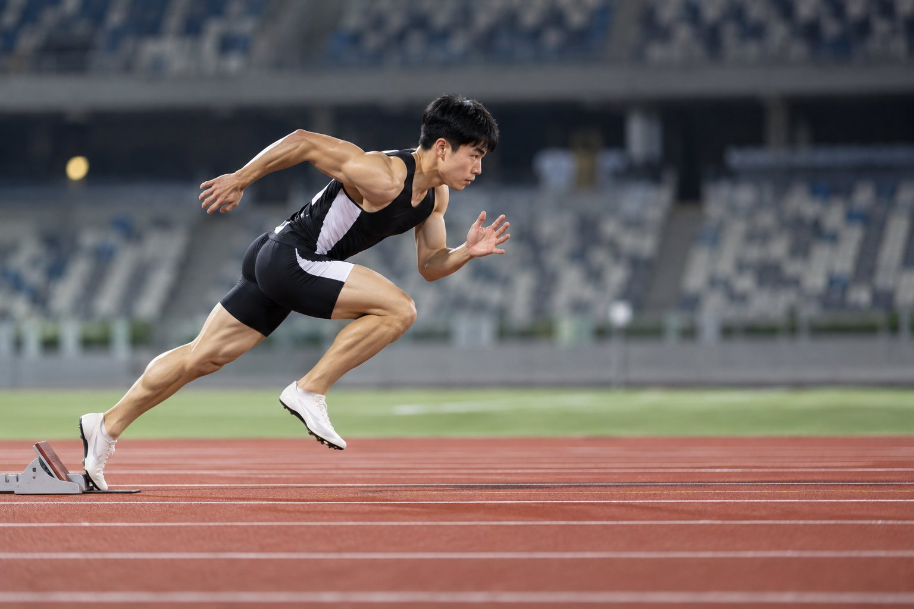
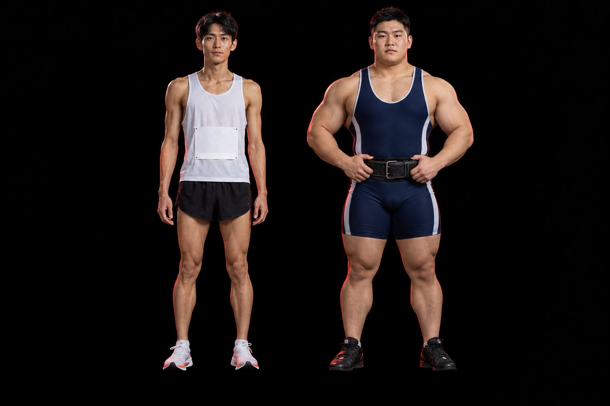
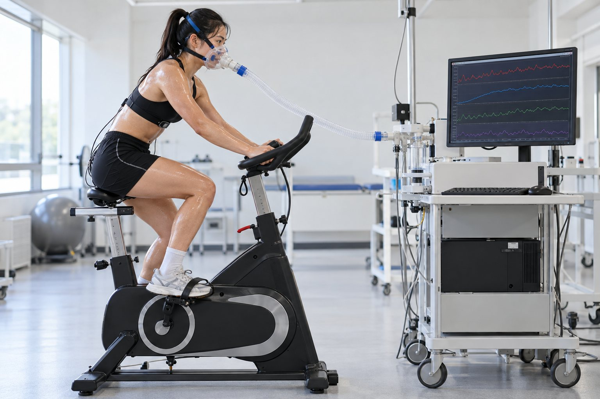
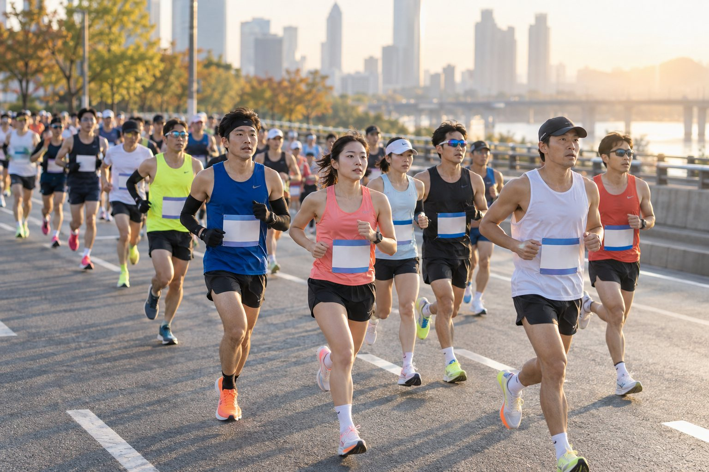

빠르지만 적게 만든다. 30초~2분 고강도의 주 시스템
인산과당인산화효소 — ADP·AMP↑면 촉진, ATP·H⁺↑면 억제
해당이 빠르면 젖산(LDH)으로, 아니면 미토콘드리아로 들어가 유산소 대사
| 시스템 | 속도조절효소 | 촉진 | 억제 |
|---|---|---|---|
| ATP-PCr | 크레아틴 키나아제 | ADP↑ | ATP↑ |
| 해당과정 | PFK | ADP·AMP·Pi↑ | ATP·H⁺↑ |

| Type I (지근) | Type IIx (속근) | |
|---|---|---|
| 미토콘드리아·미오글로빈 | 많다 | 적다 |
| 모세혈관 밀도 | 높다 | 낮다 |
| 주 대사 | 유산소 | 해당과정 |
| 미오신 ATPase·수축 속도 | 느리다 | 빠르다 |
| 운동신경 전도 속도 | 느리다 | 빠르다 |

| RER | 주 연료 | O₂ 1 L당 |
|---|---|---|
| 0.70 | 지방 | 4.69 kcal |
| 0.85 | 약 반반 | 4.86 kcal |
| 1.00 | 탄수화물 | 5.05 kcal |

수와 크기, 산화 효소↑ → 유산소로 더 많이
같은 강도에서 지방 산화↑ → 교차점 오른쪽
같은 강도에서 젖산↓ · 산소결핍↓ (유산소 반응이 빨라짐)
PCr + ADP → ATP + Cr
크레아틴 키나아제
회복 때 재합성
순 ATP 2(포도당)·3(글리코겐)
PFK · 피루브산 → 젖산
코리 회로(간)
해당과정과 교차 2~5분 사이
최종 산물 CO₂ + H₂O
약 32 ATP · 베타산화
0.7 지방 · 1.0 탄수화물
강도↑ → 속근·에피네프린 → 탄수화물↑
훈련 → 오른쪽(글리코겐 절약)
OBLA 4 mmol/L
훈련 → 높은 강도로
공통 처방 요소 = 운동 강도
고강도 → 둘 다↑
빠른: PCr 재합성·O₂ 재충전
느린: 체온·호르몬·젖산
| → Space 화면 클릭 | 다음 (단계 → 다음 장) |
| ← 오른쪽 클릭 | 이전 |
| R | 이 장 애니메이션 다시 보기 |
| T N | 대본 보기 |
| O | 전체 보기 |
| F | 전체 화면 |
| B / W | 검은 화면 / 흰 화면 |
| 숫자 + Enter | 그 장으로 이동 |
| 좌우로 밀기 | 전자칠판·폰에서 넘기기 |